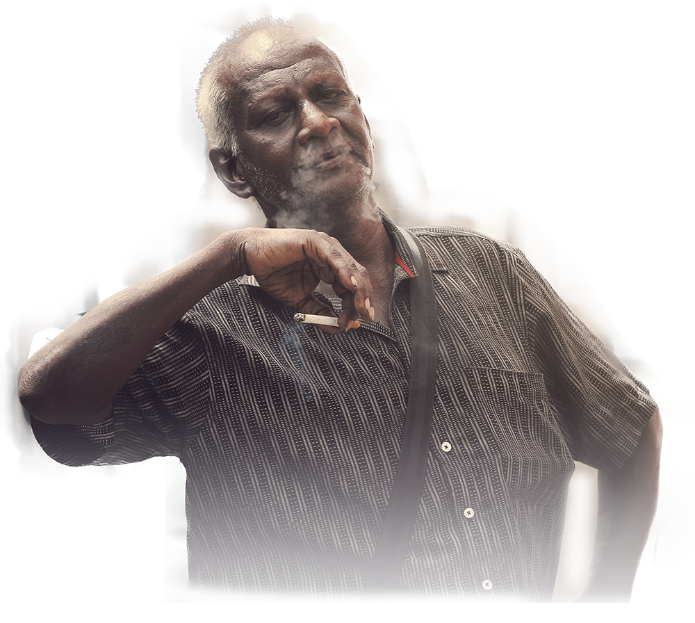

Un OVO pour les unifier tous
Vous n’avez jamais rêvé de pouvoir tenir la main de votre moitié, un soir de solitude ? Voulu être plus présent pour votre grand-mère qui passe ses journées seule chez elle? De partager un peu de chaleure humaine les jours où ça n’allait pas fort ?
OVO est bientôt là pour vous. OVO, c’est une toute nouvelle manière de communiquer, c’est la possibilité de maintenir un lien de contact avec vos proches.
Pression, texture, chaleur, communiquez à distance par le toucher.
Connecter son OVO
OVO, ce sont des modules qui fonctionnent en duo. De par la nature personnelle du langage haptique, chaque module ne peut se connecter qu’à un autre module à la fois.
Pour se connecter, il vous suffit de mettre en contact votre OVO avec celui de l’un de vos proche. Les deux modules émetteront une lumière de couleur similaire pour vous informer que la connexion a bien eu lieu. Chaque connection que vous aurez dans le futur viendra donc de votre proche, et uniquement de lui.
En cas de commande pour deux adresses différentes, les OVO arriveront chez vous déjà linké.
Se connecter avec ses proches
Parce que vous n’avez pas besoin d’un énième appareil bippant ou sonnant, OVO reste discret, rapide et instinctif.
Lorsque vous essayez de contacter un proche, son OVO va vibrer légèrement en émettant une douce lumière. Lorsque la connexion s’installe, vous serez directement apte à sentir la chaleur et la peau de la main de votre proche dans la votre.
Pression
Pression rythmée sur la main, dessins au creux de la paume, il existe bien des manières de communiquer par simple contact. OVO va transmettre à son module lié toutes les pressions que vous allez pouvoir appliquer sur sa surface. Tenir un OVO connecté dans le creux de sa main, c’est comme tenir directement celle d’un proche.
Chaleur humaine
OVO n’est pas juste un morceau de technologie froid et sans âme. Il se réchauffe lorsque son jumeau lié est prit en main. Il vous offre donc une nouvelle façon de communiquer ou rassurer vos proche, d’amener un peu plus de chaleur humaine dans votre vie. Il vous sera donc possible de réchauffer les mains de votre compagnon partis faire les courses par un froid glacial.
Matière
Il est également possible d’envoyer des matières via votre OVO. Certaines personnes sont rassurée par certains matériaux, c’est peut-être votre cas. D’une simple friction contre la texture de votre choix, partagez vos sensations directement avec vos proches.